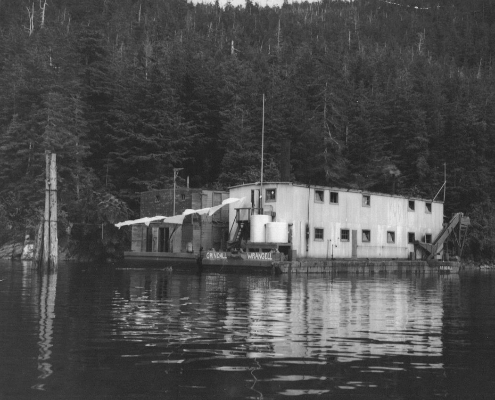
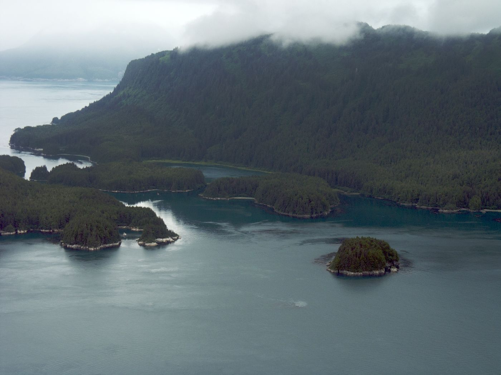

Directory / Southeast Alaska / Elfin Cove, AK
Elfin Cove tides — outer float, the Gunk Hole & Cross Sound
High and low tides for the coming week from NOAA station 9452634 (Elfin Cove, Port Althorp — 58.1947, -136.3469). Times are local (AKST/AKDT). Heights are feet above Mean Lower Low Water (MLLW). Elfin Cove is a boardwalk village of a few dozen winter residents on the north tip of Chichagof Island, tucked behind Port Althorp on the south shore of Cross Sound. It is the last harbor before Cape Spencer and the open Gulf, about 85 miles by water west of Juneau, and has no roads: you arrive by boat or floatplane. Fishermen first called the flask-shaped inner basin the “Gunk Hole.” It still shelters the troll and longline boats that work the Fairweather Grounds, Cross Sound and Icy Strait, and the summer sport-fishing lodges.
A 16-ft tide drop, a shallow Gunk Hole entrance, two grids & a Cross Sound blow
The tide swing. NOAA 9452634 is a harmonic (reference) station, so its predictions are computed for Elfin Cove directly, not as offsets from another port. In the NOAA predictions fetched 2026-11-22, Wednesday, November 25, 2026 has a 13.9 ft high at 12:30 PM and then a −2.7 ft low at 7:24 PM. That is a drop of about 16.5 ft in seven hours. Christmas Eve is bigger still: 14.0 ft at 12:20 PM to −2.8 ft at 7:16 PM (about 16.8 ft). Minus tides fall every evening Nov 23–29, Dec 6–12 and Dec 21–28, mostly between about 5 PM and 11 PM, after dark.
Inner harbor & grids. The Gunk Hole basin was dredged to about 8 ft below MLLW (Alaska DOT&PF harbor directory), but the boating guides report a controlling depth of only about 5 ft in the entrance channel (2011 survey). Deep-draft boats should wait for a rising tide to go in or out, and on these minus-tide evenings that can mean waiting several hours. The outer float is easier to reach but takes a swell in a north wind. There are two tidal grids, one for small craft and a lower grid for boats up to about 60 ft. In the next five weeks the lowest daylight lows are only about 1.8 ft at 3:09 PM Thu Dec 3 and 1.5 ft at 3:07 PM Sat Dec 19, both right at the 3:30 PM sunset, so winter grid work here means headlamps. There is no travelift or yard; the nearest are in Hoonah, Juneau and Sitka.
Weather & fuel. api.weather.gov puts the station, the cove entrance and Port Althorp in PKZ022 Cross Sound; east of the Inian Islands is PKZ021 Icy Strait; outside Cape Spencer is PKZ643 Cape Edgecumbe to Cape Spencer out to 15 NM. The forecasts issued 3:55 PM AKST Sun Nov 22, 2026 carry a Small Craft Advisory in Cross Sound through this evening and again Monday (NE 15 kt with E 25 kt near the ocean entrances tonight, NE 25 kt Monday and Tuesday, seas 5–7 ft through Wednesday). Outside, seas build to 13 ft Tuesday and Wednesday. Check the live forecasts below before you round the cape. The community fuel float sits in the outer cove below the store (gas and diesel, 907-239-2208). Hours are short and seasonal, so hail on VHF 16 or call ahead. The Community of Elfin Cove (907-239-2226) is the harbor contact; moorage is first come, first served, and rafting is normal in summer.
Computed from NOAA CO-OPS hi/lo predictions for 9452634 (2026-11-23 through 2026-12-31) and its station metadata (reference station, chart 17302); NWS Juneau coastal and inside-waters forecast text; api.weather.gov zone lookups at 58.1944,-136.3469, 58.18,-136.36, 58.17,-136.45 and 58.15,-136.40 (PKZ022), 58.22,-136.20 (PKZ021) and 58.00,-136.60 (PKZ643); FAA site data for sunrise/sunset; the ADF&G Elfin Cove harbor sheet, the Alaska DOT&PF harbor directory, the National Fisherman Pilothouse Guide and the Northwest Boat Travel guide, all checked 2026-11-22. Not for navigation.
Elfin Cove then & now
Historic


Current


Official NOAA predictions Station home NOAA chart viewer NOAA chart 17302 viewer View on Windy
Port Sponsor — Elfin Cove, AK
Top placement for lodges, charters, fuel, fish buyers and marine businesses on Cross Sound and the north Chichagof outer coast.
$25–$50 / month
Tide data: NOAA CO-OPS station 9452634 (Elfin Cove, Port Althorp; harmonic reference station), predictions (hi/lo, MLLW, local standard/daylight time). Refreshed with each nightly build; the marine-weather snapshot time below shows the latest fetch. For Pelican, Hoonah and Gustavus, see the NOAA station pages for Pelican (9452611, our Pelican tides page), Hoonah (9452438) and Bartlett Cove (9452534).
Friday, November 27, 2026
| Tide | Time (local) | Height (MLLW) |
|---|---|---|
| High | 2:45 AM | 10.4 ft |
| Low | 8:04 AM | 3.8 ft |
| High | 2:05 PM | 13.2 ft |
| Low | 9:02 PM | -2.0 ft |
Saturday, November 28, 2026
| Tide | Time (local) | Height (MLLW) |
|---|---|---|
| High | 3:37 AM | 10.2 ft |
| Low | 9:00 AM | 4.0 ft |
| High | 2:58 PM | 12.3 ft |
| Low | 9:54 PM | -1.2 ft |
Sunday, November 29, 2026
| Tide | Time (local) | Height (MLLW) |
|---|---|---|
| High | 4:32 AM | 10.0 ft |
| Low | 10:05 AM | 4.1 ft |
| High | 3:57 PM | 11.2 ft |
| Low | 10:48 PM | -0.3 ft |
Monday, November 30, 2026
| Tide | Time (local) | Height (MLLW) |
|---|---|---|
| High | 5:31 AM | 9.9 ft |
| Low | 11:19 AM | 4.0 ft |
| High | 5:05 PM | 9.9 ft |
| Low | 11:46 PM | 0.7 ft |
Tuesday, December 1, 2026
| Tide | Time (local) | Height (MLLW) |
|---|---|---|
| High | 6:32 AM | 10.0 ft |
| Low | 12:41 PM | 3.6 ft |
| High | 6:25 PM | 8.9 ft |
Wednesday, December 2, 2026
| Tide | Time (local) | Height (MLLW) |
|---|---|---|
| Low | 12:47 AM | 1.7 ft |
| High | 7:30 AM | 10.3 ft |
| Low | 2:01 PM | 2.8 ft |
| High | 7:50 PM | 8.3 ft |
Thursday, December 3, 2026
| Tide | Time (local) | Height (MLLW) |
|---|---|---|
| Low | 1:49 AM | 2.5 ft |
| High | 8:23 AM | 10.7 ft |
| Low | 3:09 PM | 1.8 ft |
| High | 9:10 PM | 8.2 ft |
Friday, December 4, 2026
| Tide | Time (local) | Height (MLLW) |
|---|---|---|
| Low | 2:47 AM | 3.1 ft |
| High | 9:11 AM | 11.1 ft |
| Low | 4:04 PM | 0.9 ft |
| High | 10:18 PM | 8.5 ft |
Marine weather & cameras
NWS marine forecast — Cross Sound (PKZ022)
Issued 519 PM AKST Thu Nov 26 2026. Snapshot fetched 2026-11-26 21:23 AKST from NWS text product. Official zone forecast · Raw text
- .REST OF TONIGHT...E wind 10 kt early in the evening becoming light. Seas 4 ft.
- .FRI...Light winds becoming NE 10 kt in the afternoon. Seas 4 ft. Rain in the afternoon.
- .FRI NIGHT...SW wind 15 kt. Seas 6 ft. Rain.
- .SAT...S wind 15 kt. Seas 6 ft. Rain.
- .SAT NIGHT...W wind 10 kt. Seas 6 ft.
- .SUN...NE wind 15 kt. Seas 6 ft.
- .MON...NE wind 15 kt. Seas 5 ft.
- .TUE...E wind 10 kt. Seas 4 ft.
NWS marine forecast — Cape Edgecumbe to Cape Spencer out to 15 NM (PKZ643)
Issued 345 PM AKST Thu Nov 26 2026. Snapshot fetched 2026-11-26 21:23 AKST from NWS text product. Official zone forecast · Raw text
...SMALL CRAFT ADVISORY THROUGH LATE FRIDAY...
- .TONIGHT...E wind 10 kt in the evening becoming light. Seas 9 ft. S swell.
- .FRI...W wind 15 kt. Seas 9 ft. S swell. Rain in the afternoon.
- .FRI NIGHT...S wind 15 kt. Seas 9 ft. S swell. Rain late.
- .SAT...S wind 15 kt. Seas 8 ft.
- .SAT NIGHT...N wind 10 kt. Seas 7 ft.
- .SUN...N wind 15 kt. Seas 7 ft.
- .MON...N wind 15 kt. Seas 7 ft.
- .TUE...SE wind 20 kt. Seas 7 ft.
NWS marine forecast — Icy Strait (PKZ021)
Issued 519 PM AKST Thu Nov 26 2026. Snapshot fetched 2026-11-26 21:23 AKST from NWS text product. Official zone forecast · Raw text
- .REST OF TONIGHT...NE wind 10 kt becoming S late. Seas 3 ft in the evening then 2 ft or less. Rain early in the evening.
- .FRI...S wind 10 kt. Seas 2 ft or less. Rain.
- .FRI NIGHT...S wind 15 kt. Seas 3 ft. Rain.
- .SAT...S wind 10 kt. Seas 2 ft or less.
- .SAT NIGHT...S wind 10 kt. Seas 2 ft or less.
- .SUN...NE wind 15 kt. Seas 3 ft.
- .MON...E wind 15 kt. Seas 3 ft.
- .TUE...E wind 15 kt. Seas 2 ft or less.
Nearby NDBC observation — Elfin Cove (ELFA2, NOAA 9452634 water-level station)
water 47°F
Observation time 2026-11-26 20:30 AKST (converted to AKST). Attribution: NOAA NDBC station ELFA2. Snapshot fetched 2026-11-26 21:23 AKST.
Nearby NDBC observation — George Island (GEXA2, Marine Exchange of Alaska, Port Althorp entrance)
wind 70°, 4 kt, gust 9 kt, air 42°F
Observation time 2026-11-26 21:02 AKST (converted to AKST). Attribution: NOAA NDBC station GEXA2. Snapshot fetched 2026-11-26 21:23 AKST.
Nearby NDBC observation — Cape Spencer (CSXA2, Marine Exchange of Alaska, mouth of Cross Sound)
wind 60°, 10 kt, gust 13 kt, air 41°F
Observation time 2026-11-26 21:02 AKST (converted to AKST). Attribution: NOAA NDBC station CSXA2. Snapshot fetched 2026-11-26 21:23 AKST.
Nearby NDBC observation — Fairweather Ground buoy (46083, offshore about 55 NM WNW)
wind 120°, 6 kt, gust 8 kt, air 46°F, 1001.2 hPa
Observation time 2026-11-26 21:00 AKST (converted to AKST). Attribution: NOAA NDBC station 46083. Snapshot fetched 2026-11-26 21:23 AKST.
Harbor webcams
- FAA WeatherCams — Cape Spencer (northeast, east, northwest and southeast views from the Cape Spencer light station about 9 NM west, looking into Cross Sound and out to the Gulf; link only, not embedded)
- FAA WeatherCams — Pelican (four views over Lisianski Inlet, about 15 NM south; the FAA listed this site as in maintenance on 2026-11-22, so images may be missing)
- FAA WeatherCams — Gustavus Dock (west, south, southwest and east views across Icy Strait toward Pleasant Island, about 25 NM east)
The FAA camera-site pages for Cape Spencer (site 267), Pelican (172) and Gustavus Dock (232) loaded on 2026-11-22 around 9:20 PM AKST. FAA site data showed sunrise about 8:12 AM and sunset about 3:33 PM AKST at Cape Spencer for Nov 23, so expect dark frames on winter nights. We found no free public camera aimed at the Elfin Cove floats or the seaplane base. Lodges or businesses with a public cam: email us and we will link it.
Elfin Cove boater notes (official links)
- ADF&G Elfin Cove harbor sheet: outer and inner harbors, space first come, first served; fuel dock; shore power for a hookup fee plus usage; general and liquor store, laundry and showers, a bar and grill, post office, lodges and rooms. Contact the Community of Elfin Cove, 907-239-2226; fuel dock 907-239-2208.
- Alaska DOT&PF harbor directory (1995 edition, still the state’s published plan sheets): inner harbor dredged to −8 ft and well sheltered from storms; outer harbor takes swells in north winds; channel depths 8–10 ft MLLW when built. Treat the depths as historic and allow for shoaling.
- National Fisherman Pilothouse Guide — Elfin Cove: VHF 16; general store with commercial fishing gear, hydraulic hoses and fittings; showers and laundry June to mid-September; welding by Happy Thoughts and Mike Nelson Fabrication; no medical service (hospitals and Coast Guard in Juneau or Sitka).
- FAA Elfin Cove Seaplane Base (ELV / PAEL): state-owned water runway in the outer cove; FAA remarks say the entrance is narrow, boats may be tied to the seaplane float, and sea swells are often in the landing area. Give floatplanes room on the outer float.
- Alaska Seaplanes schedule: scheduled floatplane service from Juneau to Elfin Cove and Pelican (crew changes, parts and mail all come this way).
- ADF&G 2026 Southeast shore-based processors by port: Elfin Cove Fish Co. at Elfin Cove; Highliner Lodge Fish House and Yakobi Fisheries at Pelican.
- NOAA ENC chart viewer and chart 17302 (Icy Strait and Cross Sound), for Port Althorp, the Inian Islands passes, Cross Sound and Cape Spencer. We link to NOAA’s viewers and do not host charts.
Local marine & shore directory
Verified public listings only. List free · Get featured
Marine services
Moorage & marinas
Seafood processors & buyers
Fuel docks
Shipyards & haul-outs
Boat repair & mechanics
Marine suppliers & chandleries
Electronics sales & installation
No verified listing yet — list your business free.
Welding & fabrication
Canvas & upholstery
No verified listing yet — list your business free.
Surveyors
No verified listing yet — list your business free.
Towing & salvage
No verified listing yet — list your business free.
Ice & bait
No verified listing yet — list your business free.
Fishing charters
Ashore for boaters
Groceries & provisioning
Hardware
No verified listing yet — list your business free.
Liquor stores
No verified listing yet — list your business free.
Laundromats
No verified listing yet — list your business free.
Showers
No verified listing yet — list your business free.
Lodging
Restaurants
Medical clinics
Pharmacies
No verified listing yet — list your business free.
Post office & shipping
Airport & floatplane
Propane
No verified listing yet — list your business free.
Auto & truck rental
No verified listing yet — list your business free.
We checked these listings on 2026-11-22 against public sources: the ADF&G Elfin Cove harbor sheet, the Alaska DOT&PF harbor directory, the National Fisherman Pilothouse Guide, the ADF&G 2026 Southeast shore-based processor map and NOAA Fisheries’ 2025 federal processor permit list, the FAA airport record for ELV, and each business’s own website where one exists. Elfin Cove is tiny and very seasonal: most lodges, the restaurant, and the showers and laundry run roughly May to September, and only the store, fuel float and post office stay open year-round. Pelican listings are about 15 NM south by water. Know a business we missed? Email us or list it free. Basic listings are free; a Featured listing is $10/month or $100/year. Contact: J.L. Miller, pacifictides.ak@gmail.com (email only).
Local news — Elfin Cove, AK
Plain links to local outlets. Always check the source for the latest. Local news partners welcome.
Free weekly tides & marine weather
Get a short email for your port. We do not sell your email. Privacy.
Mailing list powered by Buttondown.
Boating gear on Amazon
As an Amazon Associate I earn from qualifying purchases.
Helpful search links for common gear. Prices and availability are on Amazon.
Other Alaska ports
- Tenakee Springs tides
- Gustavus tides
- Hoonah tides
- Pelican tides
- Craig tides
- Haines tides
- Skagway tides
- Juneau tides
- Yakutat tides
- Sitka tides
- Petersburg tides
- Wrangell tides
- Ketchikan tides
- Cordova tides
- Prince William Sound ports overview
- Valdez tides
- Whittier tides
- Kenai tides
- Homer tides
- Kodiak tides
- Dutch Harbor tides
- Unalaska tides
Sources
- Tide predictions: NOAA CO-OPS station 9452634 Elfin Cove, Port Althorp via the CO-OPS data API (hi/lo, MLLW, local time)
- Marine forecasts: NWS Juneau coastal waters text products PKZ022, PKZ643 and PKZ021; zones confirmed with api.weather.gov point lookups on 2026-11-22
- NDBC observations: ELFA2 Elfin Cove (NOAA CO-OPS water-level station; usually water temperature only), GEXA2 George Island and CSXA2 Cape Spencer (Marine Exchange of Alaska), 46083 Fairweather Ground buoy; the refresh shows a station as unavailable when its latest report is more than a day old
- Harbor: ADF&G Elfin Cove harbor sheet; Alaska DOT&PF harbor directory; National Fisherman Pilothouse Guide; Northwest Boat Travel guide (2017 edition, Elfin Cove entry) — all checked 2026-11-22
- FAA WeatherCams public camera pages for Cape Spencer (site 267), Pelican (172) and Gustavus Dock (232); FAA NFDC airport record ELV — checked 2026-11-22
- ADF&G 2026 Southeast Alaska shore-based processors by port; NOAA Fisheries 2025 federal processor permits
- Directory:
data/businesses.csvrows for port_slug=elfin-cove, each with its public source URL (verified 2026-11-22) - Photos: H. C. Scudder, U.S. Fish and Wildlife Service, 1944 (public domain); Sam Beebe, 2008 (CC BY 2.0) via Wikimedia Commons. Graphics: original Pacific Tides artwork (boardwalk-and-floatplane mast, Gunk Hole tide marker, Cape Spencer light).